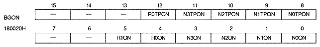

N0TPON | 180020H | bit 8 | for NBG0 (or RBG1) |
N1TPON | 180020H | bit 9 | NBG1 (or EXBG) |
N2TPON | 180020H | bit 10 | NBG2 |
N3TPON | 180020H | bit 11 | NBG3 |
R0TPON | 180020H | bit 12 | for RBG0 |
xxTPON | Processing |
0 | Enable transparency code (transparent code dots will be transparent) |
1 | Disable transparency code (transparent code dots are displayed according to their data values) |